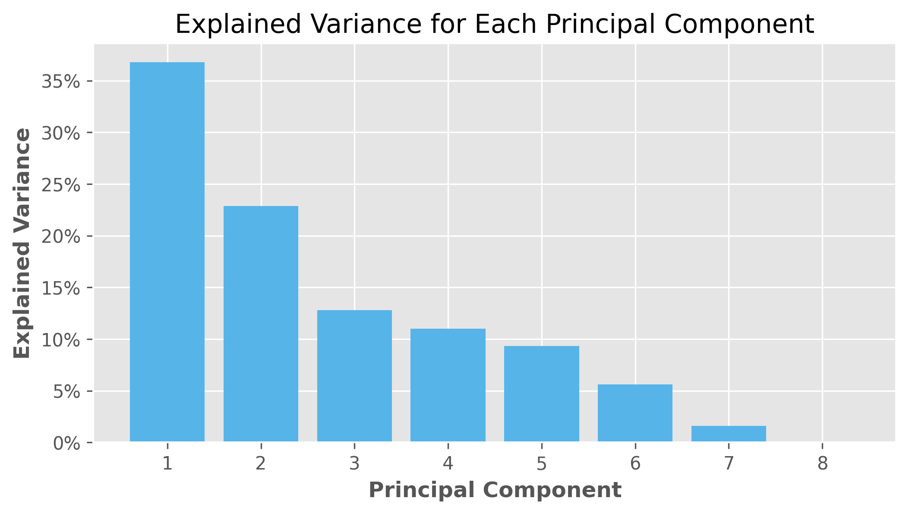

NFL PCA w/ Python
This is like the previous post on how to do a PCA for NFL WR, however, this time the focus will be on using Python. For the most part it is the same, however, there will be differences with the set up.
Since I first wrote the previous post, I learnt about .parquet files, so I now use that to read in the data since it is much smaller in size, and dramatically faster. On my machine it roughly 60 to 90 seconds to read 20 seasons of NFL data the previous way, whereas this approach takes around 5 seconds.
import numpy as np
import pandas as pd
import pyarrow.dataset as ds
from sklearn.decomposition import PCA
from sklearn.preprocessing import StandardScaler
import matplotlib.pyplot as plt
import plotly.express as px
plt.style.use('ggplot')
# scientific notation off
np.set_printoptions(suppress = True)
pd.set_option('display.max_columns', None)
pd.options.display.float_format = '{:.2f}'.format
DATA_PATH = '../../Documents/nfl/data/pbp'
dataset = ds.dataset(DATA_PATH, format = 'parquet')
rosters = pd.read_csv('roster.csv')
df = dataset.to_table().to_pandas()I did not expect it to be this complicated, but after a bit of work, I was able to get it done in a fairly similar way to what I did in R. One of the first differences is that pandas does not allow multiple assign statements for the same column in a single .assign() call, so we have to use a nested ifelse1 statement. Next, I had to define a custom function for dist_from_sticks, which slowed down computation by a lot. This is something that is worth coming back to because there must be an easier approach.
Without that, the block takes roughly 10 seconds to run, whereas with it, that goes around a minute. Because of that, I decided to break down to join functions below.
def dist_from_sticks_agg(series):
return (series - df['ydstogo']).mean()
wr_pbp = (
df
.assign(
outside_pass = lambda x: np.where(x['pass_location'] != 'middle', 1, 0),
pass_air_yards = lambda x: np.where(
(x['ydstogo'] <= 10) | (x['air_yards'].isna()),
x['air_yards'].fillna(0),
np.nan)
)
.groupby(['receiver_id', 'fantasy_id'])
.agg(
rec = ('complete_pass', 'sum'),
air_yards = ('pass_air_yards', 'mean'),
yards_per_target = ('yards_gained', 'mean'),
yards_after_catch = ('yards_after_catch', 'mean'),
td_rate = ('pass_touchdown', 'mean'),
outside_rec = ('outside_pass', 'mean'),
dist_from_sticks = ('pass_air_yards', dist_from_sticks_agg),
first_down = ('first_down', 'mean')
)
.query('rec > 25')
.reset_index()
)
wr_pos = (
df
.groupby(['receiver_id', 'fantasy_id', 'receiver', 'posteam'])
.size()
.reset_index(name = 'n')
.groupby('receiver_id')
.apply(lambda group: group.sort_values('n', ascending = False).head(1))
.reset_index(drop = True)
.drop(columns = ['n'])
)
# combine all with roster data
wr_df = (
pd.merge(wr_pbp, wr_pos, on = ['receiver_id', 'fantasy_id'], how = 'left')
.merge(rosters[['position', 'gsis_id']], left_on = 'receiver_id', right_on = 'gsis_id', how = 'left')
.query('position.isin(["WR", "TE"])')
.reset_index(drop = True)
)Then running the pca. Slightly more steps than in R, but sklearn makes it easy enough.
pca_df = wr_df.select_dtypes(include = [np.number])
N_COMPONENTS = 8
scaled_df = StandardScaler().fit_transform(pca_df)
pca = PCA(n_components = N_COMPONENTS)
pca_result = pca.fit_transform(scaled_df)
explained_variance = pca.explained_variance_ratio_
cumulative_explained_variance = np.cumsum(explained_variance)
COMPONENTS = np.arange(1, N_COMPONENTS + 1)
plt.figure(figsize = (8, 4))
plt.bar(COMPONENTS, explained_variance, align = 'center', color = '#56B4E9')
plt.xlabel('Principal Component', fontweight = 'bold')
plt.ylabel('Explained Variance', fontweight = 'bold')
plt.title('Explained Variance for Each Principal Component')
plt.gca().yaxis.set_major_formatter('{:.0%}'.format)
plt.grid(True)
plt.show()
The explained variance plot looks the same.
N_COMPONENTS = 3
pca_data = wr_df.select_dtypes(include = [np.number])
scaled_df = StandardScaler().fit_transform(pca_data)
pca = PCA(n_components = N_COMPONENTS)
pca_result = pca.fit_transform(scaled_df)
pca_df = pd.DataFrame(data = pca_result, columns = ["PC1", "PC2", "PC3"]).assign(
Position = np.random.choice(["WR", "TE"], size = 259),
Receiver = ["Receiver " + str(i) for i in range(1, 260)]
)
fig = px.scatter_3d(
pca_df, x="PC1", y="PC2", z="PC3",
color="Position",
color_discrete_map={"WR": "#386cb0", "TE": "#beaed4"},
hover_name="Receiver",
title="3D Scatter Plot of PCA Results"
)
# Customize the axis labels
fig.update_layout(scene=dict(
xaxis_title="PC1",
yaxis_title="PC2",
zaxis_title="PC3"
))
fig.show()Footnotes
np.where()is the same asifelsein base R.↩︎